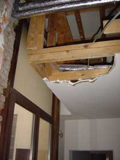
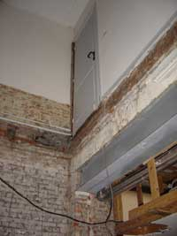

SP(a?) kan het niet laten
zaterdag 13 december 2003 | Actualiteit
De stad Antwerpen heeft het niet gemakkelijk. Terwijl de leden van het stadsbestuur er onophoudelijk met elkaar over de vloer van de gemeenteraad rollen, spuwend en schimpend dat het een lieve lust is, rakelen de bruine jongens van de oppositie met een brede glimlach hun mest naar boven. Het lijstje is inmiddels goed gekend: van VISA-kaarten tot OCMW-woninkjes voor de gemeenteraadsleden en corrupte politiecommissarissen. Dit weekend is het weer feest!
De SPa wreef zich vorige maand flink in de handjes. Ze hadden hun ex-partijsecretariaat in de Everaertsstraat stilletjes aan de stad kunnen slijten. Stilletjes, omdat Guy Peeters, voorzitter van de verkopende SP-VZW, in maart van dit jaar nog verklaard heeft in de Gazet van Antwerpen dit geenszins van plan was te doen. Het gebouw — dat volgens de partij in zeer goede staat verkeert — brengt de partijkas maar liefst 27 miljoen oude Belgische frank op (belastingsgeld nota bene). Dat is bijna het driedubbele van de oorspronkelijke aankoopprijs. Wat een ‘zeer goede staat’ inhoudt voor de heren en dames van de SPa kan je op de website van het Vlaams Blok Antwerpen bewonderen.
Je moet het ze nageven: muckrackers zijn het als de beste, die blokkers. Arme Patrick Janssens…


Frederik Vandaele op 14 december 2003
Ah! Verdikke! Saddam komt roet in het eten gooien...